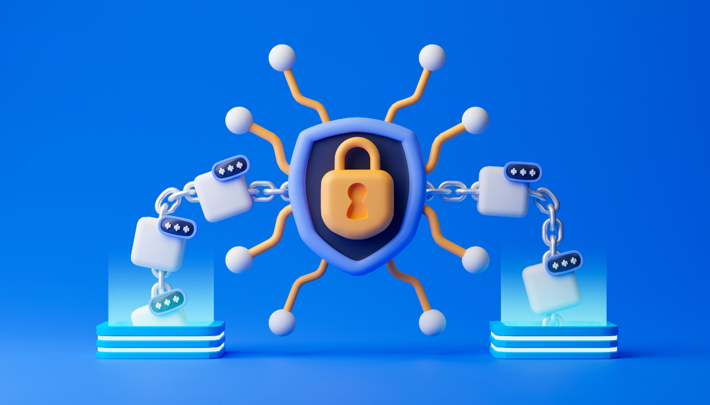

Article 3
La blockchain au service du Web 3.0

La blockchain, une technologie qui a été popularisée par le Bitcoin, est devenue un élément clé dans l'élaboration du Web 3.0. La blockchain permet la création de systèmes décentralisés qui sont plus résilients et plus sécurisés que les systèmes centralisés traditionnels. Dans cet article, nous allons examiner le rôle de la blockchain dans le développement du Web 3.0.
La blockchain est une technologie de registre distribué qui permet de stocker et de gérer des données de manière transparente, décentralisée et sécurisée. La technologie est basée sur un réseau de nœuds connectés qui travaillent ensemble pour valider et stocker les transactions. Chaque transaction est cryptée et ajoutée à une chaîne de blocs (blockchain) qui peut être consultée et vérifiée par n'importe qui. Cette transparence et cette sécurité renforcée ont conduit à l'utilisation de la blockchain dans diverses applications, y compris les transferts de fonds, les contrats intelligents, les titres de propriété, et bien plus encore.

La blockchain est un élément clé du Web 3.0, car elle permet la création de systèmes
décentralisés qui sont plus résilients et plus sécurisés que les systèmes centralisés
traditionnels. Les systèmes centralisés sont vulnérables aux attaques et aux pannes, car ils
sont basés sur un serveur unique qui peut être compromis ou tomber en panne. Les systèmes
décentralisés, en revanche, sont répartis sur un grand nombre de nœuds qui travaillent
ensemble pour fournir des services. Cela signifie que si un nœud tombe en panne ou est
compromis, le réseau reste fonctionnel.
Dans le Web 3.0, la blockchain est utilisée pour créer des systèmes de confiance
décentralisés. Les contrats intelligents sont un exemple d'application de la blockchain dans
le Web 3.0. Les contrats intelligents sont des programmes informatiques qui sont stockés et
exécutés sur la blockchain. Ils permettent l'automatisation de la vérification, de la
négociation et de l'exécution de contrats sans avoir besoin d'intermédiaires. Cela peut
réduire les coûts et les délais de traitement, tout en augmentant la transparence et la
sécurité.
La blockchain est également utilisée pour créer des identités numériques décentralisées. Les
identités numériques décentralisées permettent aux utilisateurs de contrôler leur propre
identité en ligne, plutôt que de laisser cette responsabilité à des tiers de confiance. Les
identités numériques décentralisées peuvent être utilisées pour l'accès aux services en
ligne, la validation d'identité et bien plus encore.
Enfin, la blockchain est utilisée pour créer des systèmes de vote décentralisés. Les
systèmes de vote décentralisés permettent aux utilisateurs de voter de manière transparente
et vérifiable, sans avoir besoin de tiers de confiance. Cela peut augmenter la confiance
dans les processus de vote, tout en réduisant les coûts et les délais de traitement.
En conclusion, la blockchain est un élément clé du Web 3.0. Elle permet la création de systèmes décentralisés qui sont plus résilients et plus sécurisés que les systèmes centralisés traditionnels.